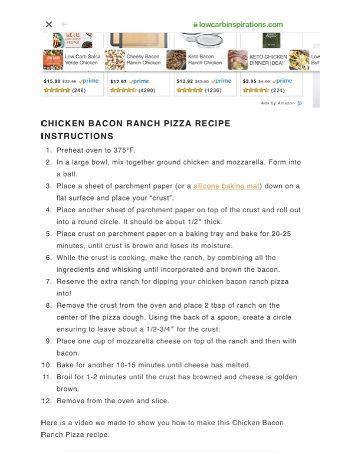

Chicken Bacon Ranch Pizza (Page 2)

Original cookbook page 6
Instructions page for the low-carb chicken bacon ranch pizza with ground chicken crust and homemade ranch topping.
Cook: 30-40 minutes
Ingredients
- Ground chicken
- Mozzarella cheese (for crust and topping)
- Ranch dressing ingredients
- Bacon
- Parchment paper
Instructions
- Preheat oven to 375°F.
- In a large bowl, mix together ground chicken and mozzarella. Form into a ball.
- Place parchment paper on flat surface and place your crust.
- Place another sheet of parchment on top and roll out into round circle, about 1/2 inch thick.
- Place crust on parchment on baking tray and bake 20-25 minutes, until brown and loses moisture.
- While crust cooks, make ranch by whisking all ingredients together, and brown the bacon.
- Remove crust from oven and place 2 tbsp ranch in center, spreading with spoon to create circle, leaving 1/2-3/4 inch for crust.
- Place 1 cup mozzarella cheese on top of ranch, then add bacon.
- Bake another 10-15 minutes until cheese melted.
- Broil 1-2 minutes until crust browned and cheese golden brown.
- Remove from oven and slice.
Recipe #6 from collection